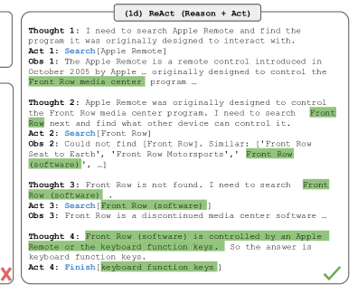

A model that calls a tool never runs it
The JSON a model writes when it "calls" a tool executes nothing on its own — a program outside the model performs the real action and writes the answer back as text.
Why this matters
Ask a chatbot for today's weather, a stock price, or a search result, and it answers as if it just went and looked. It didn't, and it can't. Nothing in a language model connects to the internet, a calculator, or a filesystem. What actually happens is a documented, five-step contract between the model and a separate piece of software, and every lab that ships "tool use" or "function calling" implements the same contract. By the end of this lesson you can trace one real tool call through all five steps, say which step is the model and which is the program, and name what even the labs cannot yet explain.
- 01
- Language models draw no line between instructions and data: why a tool's description in the prompt is no different from anything else the model reads.
- 02
- The instant a model writes a token, it becomes fact: how a model produces text one token at a time, all it is doing when it "calls" a tool.
- 03
- A model's weights freeze the moment its training run ends: the reason tools exist at all — a frozen model needs a channel to anything after training.
Ask Claude for San Francisco's weather and nothing checks it
Send Claude a message asking for the weather in San Francisco,
alongside a tool named get_weather that your code
knows how to run. A few seconds later you get back a plain
English sentence: the temperature, the sky. It reads like the
model went and looked. It did not. Nothing in a language model
has a network socket, a calculator, or a way to run code. The
model has one channel in and one channel out, and both carry
text.1
Here is what a tool actually is to the model: a block of text in
the prompt, next to the user's question, describing a function it
may ask for. Anthropic's API calls this an input_schema, a JSON object naming the function (get_weather),
describing what it does, and listing its arguments and which are
required.2
OpenAI's API calls the same kind of object a function
entry inside a tools array, with the same three
parts: name, description, and a JSON Schema of parameters.3
An independent write-up puts it the same way: the model "can
recognize that a specific action
needs to happen and request that action from an external
function."4
Neither schema is a switch that turns on a capability. It is a
paragraph the model reads before it starts writing, structurally
no different from
anything else typed into the same prompt. It is the model's training, not a wire running from its
weights to a real weather service, that decides whether and when
to reach for get_weather.
The model's "call" is a paragraph it writes, not a button it presses
When Claude decides the weather tool applies, it does not reach
outside itself. It keeps doing the only thing a language model
ever does: predicting the next token, one at a time.1
What changes is the shape of the tokens it writes. The same
generation process
that writes an ordinary sentence
instead writes a structured object, because that is the pattern
its training rewarded here. Anthropic's API surfaces that object
as a tool_use content block, signaled by stop_reason: "tool_use".
{
"stop_reason": "tool_use",
"content": [
{
"type": "tool_use",
"name": "get_weather",
"input": { "location": "San Francisco, CA" }
}
]
}OpenAI's models write the same information into a different envelope, one whose arguments field arrives as a JSON string rather than a native object, so the caller has to parse it a second time.3 The field names differ. The fact underneath them does not.
| Field | Claude (Anthropic) | GPT (OpenAI) |
|---|---|---|
| Signal | stop_reason: "tool_use" | an entry appears in a tool_calls array |
| Name | name field in the tool_use block | function.name |
| Arguments | input, a native JSON object | function.arguments, a JSON object re-encoded as a string |
| Match-back id | id field on the tool_use block | id, e.g. call_k2QgGc9GT9WjxD76GvR0Ot8q |
The shape is not a chat-API invention either. The call is text, and text alone does not check a website.
A program you wrote reads that text and does the rest
Anthropic states the boundary directly: "The model never executes
anything on its own. It emits a structured
request, your code (or Anthropic's servers) runs the operation,
and the result flows back into the conversation."1
That sentence names the actor everyone skips when they say "the
AI checked the weather." It is a piece of software sitting
between the model and the world: watching for a tool_use
block, calling the real API, and formatting the result as a new
message. The Model Context
Protocol is an open-source standard for connecting what it calls
"AI applications" to external tools.5
It names that piece of software the "host," and its own
pseudocode gives the mechanism: the host intercepts the tool
call, routes it to the right server, executes it, and returns the
result.6
Whatever a team calls it, agent loop, orchestrator, MCP host, it
is ordinary code running on a computer the model cannot reach.
The weather API answers to that program, never to the model.
Once that program has the weather, it hands the result back the same way the model handed out the request: as text, appended to the conversation.
{
"type": "tool_result",
"tool_use_id": "...",
"content": "15 degrees Celsius, partly cloudy"
}Claude runs again on that extended prompt and writes an ordinary sentence: "The current weather in San Francisco is 15 degrees Celsius with partly cloudy skies."2 Nothing about that sentence is privileged. It is generated the same way the tool call was, prose instead of JSON.
Send, call, paste back, resume: the loop has a name
One round trip rarely finishes a real task, so the same moves
repeat. Anthropic documents the repetition as a five-step cycle.
Send the request and the tool list, get back
stop_reason: "tool_use", execute the tool, and format
a tool_result. Send a new request carrying that
result, and repeat from step two until Claude answers with
ordinary text instead.1
This pattern has a name: reasoning in text, acting by calling
something external, reading back what happened, and reasoning
again. Yao et al.'s 2022 paper called it ReAct, for "reason and
act." The trace below, from that paper's own example, is one
model answering a trivia question this way. It writes a Thought,
turns the thought into a Search action, reads the Observation an
external API returns, and uses it to write the next Thought.7

Interleaving reasoning with acting measurably changes what a model gets right. On a sample of failures the authors hand-annotated across HotpotQA and a fact-verification benchmark, chain-of-thought prompting alone hallucinated a fact in 14% of failures; ReAct's failures in the same sample carried a 6% false-positive rate.7 That is a failure-sample comparison, not a population-wide error rate. In a household-chores game called ALFWorld, the gap shows up as raw task completion: ReAct's best trial solved 71% of tasks against 45% for acting with no reasoning step at all.7 The weather exchange above is one iteration of this loop. A harder question just runs it more than once.
What training decided, and what nobody can point to
The loop itself is settled: the schema in the prompt, the structured span the model writes, the external program that executes and pastes back a result, the repeat-until-prose exit. What is not settled is why a model reaches for a tool at the moment it does. Toolformer's own history shows why that is a training question, not an architectural one. Schick et al. did not change GPT-J's architecture to add tool use. They ran a self-supervised fine-tuning pass: candidate API calls were sampled, tried, and kept only when they measurably improved the model's ability to predict the following tokens, then fine-tuned the model on the calls that survived.8 That interruption, generation pausing until a response is spliced in, is trained.8
Training that decisive can also misfire in ways nobody can explain. Ask for a tool whose required arguments are missing, and Opus usually recognizes the gap and asks. Sonnet sometimes asks and sometimes infers a plausible value instead. Neither behavior is guaranteed, especially on an ambiguous prompt or a smaller model.2 Which model calls which tool, correctly filled, is a fact about what the fine-tuning run rewarded. Nobody, including the labs, can point to a weight and say that is where the decision lives.
A tool call that never leaves the vendor's servers looks like
evidence the capability is architectural. Anthropic's
server-executed tools, web_search and code_execution
among them, run without the calling application touching
execution at all: enable the tool and "the server handles
everything else."1
That is the strongest case for "built in." Anthropic's own
documentation forecloses it in the same breath: those tools still
run on its infrastructure, a server process outside the model's
forward pass, and the model still only sees the result as
inserted text.1
What varies is only which external program does the executing,
never whether one does.
Nor does the training reliably help. Toolformer, 6.7 billion parameters with a search tool available, still trailed plain GPT-3's 175 billion parameters and no tool at all on two open-domain question-answering benchmarks: 26.3% against 29.0% on WebQuestions, 17.7% against 22.6% on Natural Questions.8 Training a model to call a tool does not guarantee it calls the tool well.
The same gap makes a fetched page dangerous: a page can tell the model to call a tool it was told not to, or quietly drift the arguments it fills.
The takeaway
"The AI checked the weather" describes two actors as if they were one. The model wrote a paragraph of JSON asking for the weather in San Francisco. A separate program, code running on a machine the model cannot reach, read that paragraph, called the real weather service, and typed the answer back into the conversation as more text. The model resumed on that extended text and wrote the sentence you read. Every documented tool-use format, from Anthropic's and OpenAI's APIs to Toolformer's training run to the Model Context Protocol's host, divides the labor the same way. The model only ever writes and reads text. Everything that touches the world sits outside it, running the send, call, paste-back, resume loop the ReAct paper named. What training decided is when to make a call and how to fill it in, and that decision is exactly where the explanation runs out. Nobody can point to the moment inside the weights where a model chooses to ask, guess, or stay silent. The next time an assistant says it searched, ran, or looked something up, hold onto the sentence Anthropic states outright: the model never executes anything on its own.
- 01
- OpenAI: Function calling and other API updates, Simon Willison: a practitioner's first notes on this same request/response shape, written the day OpenAI shipped it.
- 02
- Building Effective Agents, Anthropic: what teams build once one call is not enough, and when a simpler prompt chain beats a full agent.
Sources
- Anthropic · How tool use works
- Anthropic · Tool use with Claude (overview)
- OpenAI Cookbook · How to call functions with chat models
- Apideck (Saurabh Rai) · An introduction to function calling and tool use
- Model Context Protocol · What is the Model Context Protocol (MCP)?
- Model Context Protocol · Architecture overview
- Yao et al. · ReAct: Synergizing Reasoning and Acting in Language Models (arXiv:2210.03629)
- Schick et al. · Toolformer: Language Models Can Teach Themselves to Use Tools (arXiv:2302.04761)